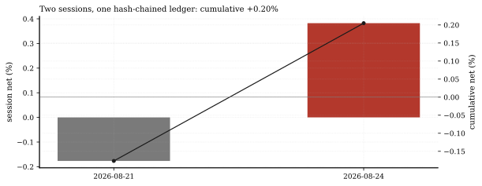
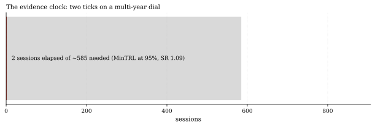
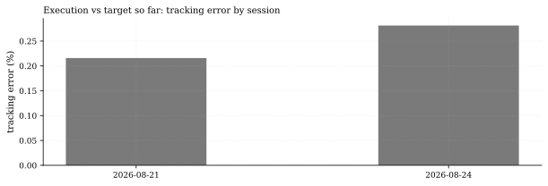

The one-paragraph version. The paper-live ledger wrote its second session on 2026-08-24: +0.38% on the day, +0.20% cumulative, NAV $1,002,050 on the $1.0M start, hash chain valid, kill stage GREEN, sixteen orders and zero rejections, tracking error 0.28%. Two good days prove nothing - and we can say precisely how much nothing: at the book's own full-sample Sharpe of 1.09, the Minimum Track Record Length (the platform's canonical, test-pinned implementation) demands 2.32 years - about 585 sessions - to be 95% confident the Sharpe is positive. The ledger exists so that clock runs honestly; this entry is tick 2 of 585, 0.34% of the dial.
How we worked this problem
This is the first issue of Live Desk, the series that will read the paper-live ledger every cycle now that rows exist. Row 1 landed 2026-08-21, the first session after the 2026-08-20 go-live; row 2 followed on Monday 2026-08-24. Every ledger fact below comes from the live engine's own status call - the same function that verifies the hash chain - and the backtest reference is the equal-weight 20-member library book the live weights track. For the "what would evidence actually look like" question we call the platform's tested min_track_record_length (Bailey-Lopez de Prado convention, per-period moments) on the book's own return distribution rather than quoting a generic number.
The data audit
| Source | Coverage | As-of | Role |
|---|---|---|---|
data/loop/live/live_returns.csv | 2 hash-chained sessions | 2026-08-24 | ledger facts (via live_status) |
data/loop/live/fills.jsonl | 16 fills, 0 rejected | 2026-08-24 | deployment / execution counts |
data/loop/library/*_T1.csv | 20 member net streams, 2007-2026 | 2026-08-14 | the backtest book: Sharpe, skew, kurtosis, MinTRL |
Certification-time member streams end 2026-08-14; the ledger's backtest reference is that frozen book, and the two live rows are measured against member target weights (member_weights_v1).
The external read
Bailey and Lopez de Prado's "The Sharpe Ratio Efficient Frontier" introduced the Minimum Track Record Length - how long a live record must run before a Sharpe estimate clears a confidence bar - with the familiar rule of thumb that a Sharpe-1.0 strategy needs roughly 2.7 years at 95% confidence (QWAFAFEW lecture PDF; Deflated Sharpe Ratio paper). Our cross-check runs the same convention on our book: at Sharpe 1.09 with normal moments the dial reads 2.28 years (576 sessions) - slightly shorter than the rule of thumb, as a higher Sharpe should be - and the book's actual fat tails (skew -0.18, kurtosis 6.19) add only about 9 sessions, taking it to 2.32 years (585). At this Sharpe the higher moments barely move the dial; the dominant term is the Sharpe itself.
Exhibits
Exhibit 1 - the ledger. Row 1 (2026-08-21): -0.18%. Row 2 (2026-08-24): +0.38%. Cumulative +0.20%, NAV $1,002,050 against the $1,000,000 start. Chain valid, GREEN, not halted.

Exhibit 2 - the evidence clock. 2 sessions elapsed of the 585 the canonical MinTRL computation demands at 95% confidence - 0.34% of the dial. With normal moments the dial would read 576 sessions (2.28 years); the book's kurtosis 6.19 adds just 9 more.

Exhibit 3 - execution quality so far. Tracking error against target: 0.22% on row 1, 0.28% on row 2 - the fill engine is landing within fractions of a percent of its targets, with zero rejected orders across 16 fills.

So what - opportunities
- The ledger is append-only and hash-chained: every future Live Desk
- The clock cuts both ways: 2.32 years is the 95% confidence bar for
- MinTRL is now a standing part of Live Desk: as rows accumulate, the
entry reads the same immutable rows, and the Track Record page grades every claim against them - the anti-cherry-picking machinery is the product.
proving the Sharpe is positive; allocator conversations start well below that bar, and interim gates (the kill-switch latches at 1.5x backtest drawdown, the live engine's configured latch) protect the downside while the clock runs.
same script re-computes the remaining dial - the series will show the clock paying down, session by session.
So what - risks
- Two sessions is noise: +0.20% cumulative is well inside one standard
- The 2.32-year figure assumes the backtest moments hold live - if
- Structural break ahead: the 2026-12-06 US 23-hour session switch
day for a book running 6.9% annualized volatility; no signal should be read into the sign, and we do not claim one.
live Sharpe comes in lower (it usually does once frictions and timing bite), the evidence bill lengthens fast: the dial scales roughly with the inverse square of Sharpe.
(Federal Register, Apr 15 2026) changes the trading calendar mid-clock; the ledger will carry it, and the MinTRL math treats sessions, not stories.
Machinery: how this piece was produced
articles/2026-08-24-live-desk-first-two-sessions/analysis.py calls the live engine's live_status (chain verification parity with the operator command), reads the ledger CSV for per-row detail, builds the equal-weight book from the 20 member streams, and computes MinTRL with the platform's canonical quantlab.methods.validation.metrics.min_track_record_length (per-period convention, excess-kurtosis input, alpha 5%) - the same function wired into the inference scorecard, never re-derived by hand. Every number above lands in assets/numbers.json; three figures render as SVG + PNG twins. (The first draft of this note hand-rolled the formula in annualized form and overstated the dial by 3x; the editor caught it and the canonical import is what you read here.)
Reproduce with: ``bash .venv/Scripts/python articles/2026-08-24-live-desk-first-two-sessions/analysis.py ``
Limitations
- Two rows: every statistic here is a description of the machinery, not a
- The MinTRL computation is the i.i.d.-returns version; autocorrelation or
- The backtest book's moments come from net T1 certification streams
- Paper execution (SimBroker fills): real-venue slippage would widen the
performance claim.
regime shifts would shift the dial (in either direction).
ending 2026-08-14; the live book may drift from them.
tracking errors shown.
Sources - external reading list
| Claim | Source |
|---|---|
| Minimum Track Record Length: how long a record must run to clear a confidence bar; ~2.7-year rule of thumb for Sharpe 1.0 - cross-checked: 2.28 years with normal moments at our SR 1.09, 2.32 years with the book's actual moments | Bailey & Lopez de Prado, The Sharpe Ratio Efficient Frontier (QWAFAFEW PDF) |
| The Deflated Sharpe Ratio (multiple-testing correction; the sibling statistic to MinTRL) | Bailey & Lopez de Prado 2014, SSRN 2460551 |
quantlab-live-engine; min-track-record-length; matplotlib